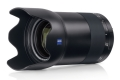

器材库 > 35mm画幅MF定焦镜头 > Milvus 35/1.4

详细规格
发布日期
2017-06-21
焦距
35mm
最大光圈
f/1.4
最小光圈
f/16
视角（对角）
64.2°
视角（水平）
55°
视角（垂直）
38°
镜头结构
14片/11组
非球面镜片
1片
最近对焦距离
30cm
最大放大倍率
1 : 4.6
滤镜口径
72mm
镜头卡口
Canon EF, Nikon F
防抖
否
颜色
黑色
尺寸
（不带镜头盖）ZE：85×125mmZF.2：85×126mm
重量
ZE：1174gZF.2：1131g
cybertron2018-11-16 17:184.58 分
操作性 4.50耐用性 5.00性价比 3.50解像力 5.00色彩还原 5.00机械结构 4.50
产品图 / 样片
Milvus 35/1.4
评测 / 相关文章
- 详细内容 （存档）
- 脱胎换骨 蔡司Milvus 35/1.4评测 （存档）
- ［试用］蔡司Milvus 35/1.4实拍样张 （存档）
- ［资讯］蔡司Milvus 35/1.4外观图赏 （存档）